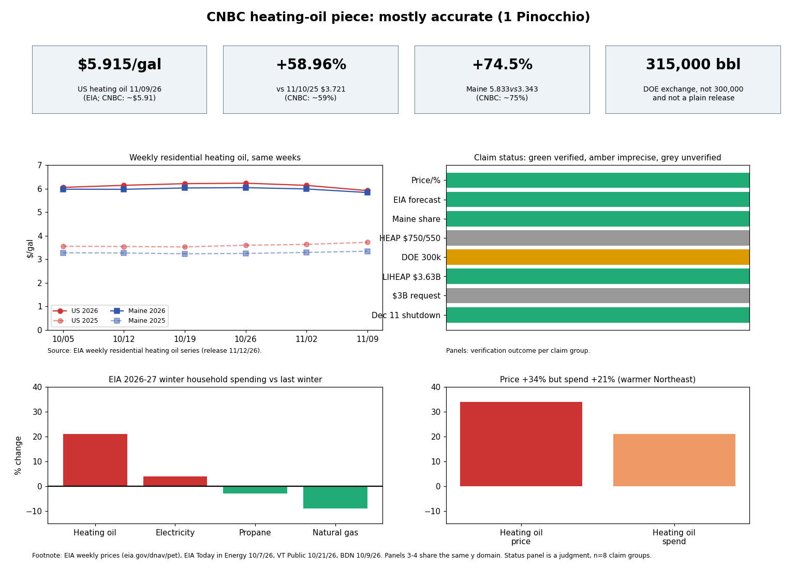

The piece earns 1 Pinocchio. The headline prices match EIA exactly: US residential heating oil $5.915/gal on 11/09/26 vs $3.721 on 11/10/25 is +58.96% (CNBC: ~59%); Maine $5.833 vs $3.343 is +74.5% (CNBC: ~75%). The EIA winter forecast ($2,115, +21%; natural gas lower, electricity higher) is confirmed.
| Claim | Finding | Confidence |
|---|---|---|
| US $5.91, +59% | EIA $5.915 vs $3.721 = +58.96% | High |
| Maine $5.83, +75% | $5.833 vs $3.343 = +74.5% | High |
| ~50% Maine homes use oil | EIA "5 of 10 use petroleum, primarily heating oil"; other sources 50-60% | Medium |
| EIA $2,115, +21%; gas/propane less, electric more | Confirmed (gas -9%, propane -3%, electric +4%, heating oil price +34%) | High |
| Warmer Northeast winter | EIA: warmer than last winter | High |
| 300,000 barrels from reserve | Up to 315,000, exchange; analyst "pebble in the ocean" quote is similar to the piece's "modest buffer" | Medium |
| HEAP $750 vs $550 | Not verifiable here | Low |
| $3.63B LIHEAP Oct 9 | $3.6B FY27 release (APPA); Maine $36.7M Oct 9 | Medium |
| $3B emergency request | Not found | Low |
| Dec 11 shutdown date | CR runs through 12/11/26 | High |
| Parent quote; Lafleche story | Not checkable here (primary reporting) | n/a |
The article text was read through a summarizing fetch tool, not verbatim, so wording of quotes was not checked. EIA values are weekly prices excluding taxes. Maine's earlier "+80%" (Oct) vs "+75%" (Nov) reflects different weeks.